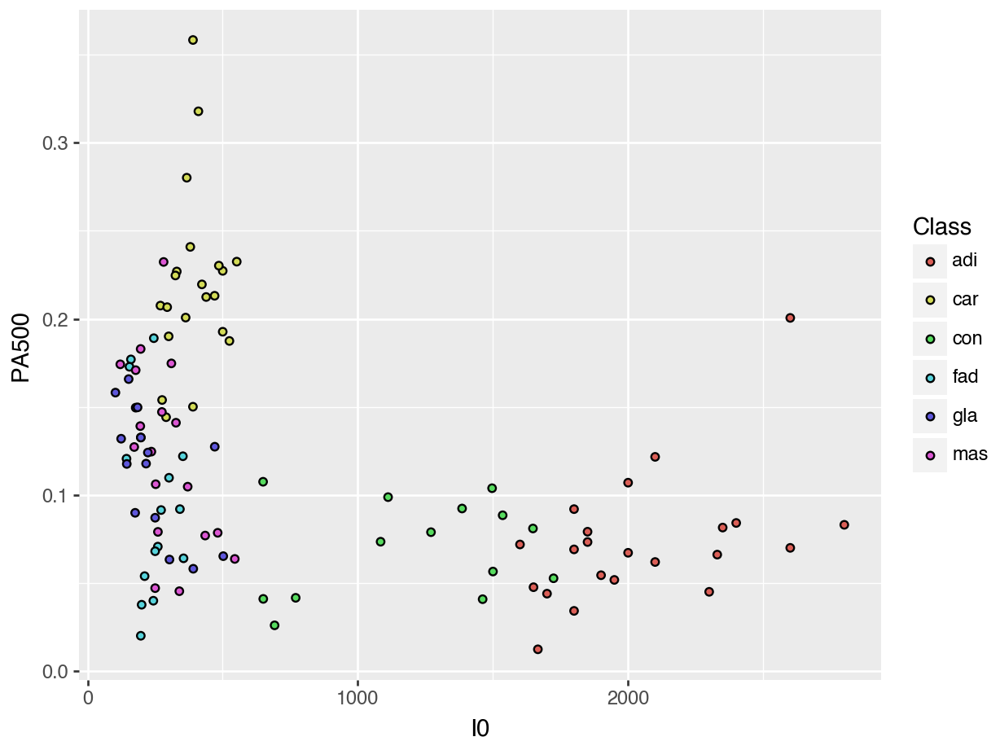
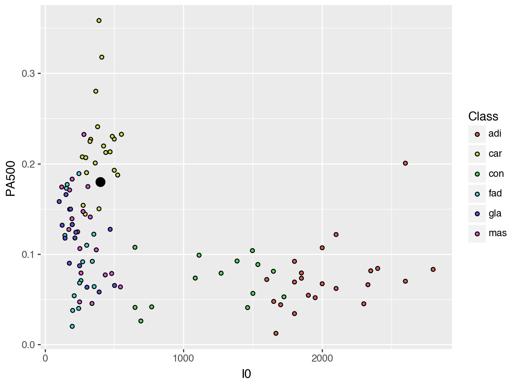
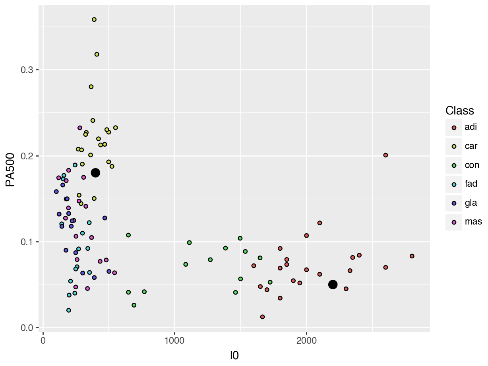

Case # Class I0 ... Max IP DR P
0 1 car 524.794072 ... 60.204880 220.737212 556.828334
1 2 car 330.000000 ... 69.717361 99.084964 400.225776
2 3 car 551.879287 ... 77.793297 253.785300 656.769449
3 4 car 380.000000 ... 88.758446 105.198568 493.701814
4 5 car 362.831266 ... 69.389389 103.866552 424.796503
.. ... ... ... ... ... ... ...
101 102 adi 2000.000000 ... 204.090347 478.517223 2088.648870
102 103 adi 2600.000000 ... 418.687286 977.552367 2664.583623
103 104 adi 1600.000000 ... 103.732704 432.129749 1475.371534
104 105 adi 2300.000000 ... 178.691742 49.593290 2480.592151
105 106 adi 2600.000000 ... 154.122604 729.368395 2545.419744
[106 rows x 11 columns]Classification
The story so far
Choosing a Best Model
We select a best model - aka best prediction procedure - by cross-validation.
Feature selection: Which predictors should we include, and how should we preprocess them?
Model selection: Should we use Linear Regression or KNN or Decision Trees or something else?
Hyperparameter tuning: Choosing model-specific settings, like \(k\) for KNN.
Each candidate is a pipeline; use
GridSearchCVorcross_val_scoreto score the options
Case Study: Breast Tissue Classification
Breast Tissue Classification
Electrical signals can be used to detect whether tissue is cancerous.

The goal is to determine whether a sample of breast tissue is:
::::{.columns} :::{.column} 1. connective tissue 2. adipose tissue 3. glandular tissue :::
- carcinoma
- fibro-adenoma
- mastopathy
Reading in the Data
We will focus on two features:
- \(I_0\): impedivity at 0 kHz,
- \(PA_{500}\): phase angle at 500 kHz.
Visualizing the Data
K-Nearest Neighbors Classification
K-Nearest Neighbors
What would we predict for someone with an \(I_0\) of 400 and a \(PA_{500}\) of 0.18?
K-Nearest Neighbors
K-Nearest Neighbors
This process is almost identical to KNN Regression:
from sklearn.preprocessing import StandardScaler
from sklearn.neighbors import KNeighborsClassifier
from sklearn.pipeline import make_pipeline
pipeline = make_pipeline(
StandardScaler(),
KNeighborsClassifier(n_neighbors=5, metric="euclidean"))
pipeline = pipeline.fit(X_train, y_train)
pipeline.predict(X_unknown)array(['car'], dtype=object)Probabilities
Which of these two unknown points would we be more sure about in our guess?
Probabilities
Instead of returning a single predicted class, we can ask it to return the predicted probabilities for each class.
array([[0. , 0.6, 0. , 0.2, 0. , 0.2],
[1. , 0. , 0. , 0. , 0. , 0. ]])How did Scikit-Learn calculate these predicted probabilities?
Cross-Validation for Classification
We need a different scoring method for classification. A simple one is accuracy:
\[\text{accuracy} = \frac{\text{# correct predictions}}{\text{# predictions}}.\]
Cross-Validation for Classification
from sklearn.model_selection import cross_val_score
scores = cross_val_score(
pipeline, X_train, y_train,
scoring="accuracy",
cv=10)
scoresarray([0.63636364, 0.81818182, 0.45454545, 0.54545455, 0.63636364,
0.54545455, 0.5 , 0.6 , 0.4 , 0.7 ])array([0.63636364, 0.81818182, 0.45454545, 0.54545455, 0.63636364,
0.54545455, 0.5 , 0.6 , 0.4 , 0.7 ])Cross-Validation for Classification
As before, we can get an overall estimate of test accuracy by averaging the cross-validation accuracies:
But! Accuracy is not always the best measure of a classification model!
Confusion matrix
from sklearn.metrics import confusion_matrix
pipeline = pipeline.fit(X_train, y_train)
y_train_predicted = pipeline.predict(X_train)
confusion_matrix(y_train, y_train_predicted)array([[20, 0, 2, 0, 0, 0],
[ 0, 20, 0, 0, 0, 1],
[ 2, 0, 11, 1, 0, 0],
[ 0, 0, 0, 13, 1, 1],
[ 0, 0, 0, 3, 12, 1],
[ 0, 2, 0, 8, 3, 5]])Confusion matrix
Activity
Activity
Use a grid search and the accuracy score to find the best k-value for this modeling problem.
Classification Metrics
Case Study: Credit Card Fraud
Data set of credit card transactions from Vesta.
Goal: Predict isFraud, where 1 indicates a fraudulent transaction.
card4 card6 P_emaildomain ... C13 C14 isFraud
0 visa debit gmail.com ... 637.0 114.0 0
1 visa debit ... 3.0 1.0 0
2 visa debit yahoo.com ... 4.0 1.0 1
3 visa debit hotmail.com ... 0.0 0.0 0
4 visa debit gmail.com ... 20.0 1.0 0
... ... ... ... ... ... ... ...
59049 mastercard debit gmail.com ... 1.0 1.0 0
59050 mastercard credit yahoo.com ... 1.0 1.0 0
59051 mastercard debit icloud.com ... 15.0 2.0 0
59052 visa debit gmail.com ... 1.0 1.0 1
59053 mastercard debit ... 84.0 17.0 0
[59054 rows x 19 columns]Classification Model
We can use \(k\)-nearest neighbors for classification:
from sklearn.preprocessing import OneHotEncoder, StandardScaler
from sklearn.neighbors import KNeighborsClassifier
from sklearn.pipeline import make_pipeline
from sklearn.compose import make_column_transformer
pipeline = make_pipeline(
make_column_transformer(
(OneHotEncoder(handle_unknown="ignore", sparse_output=False),
["card4", "card6", "P_emaildomain"]),
remainder="passthrough"),
StandardScaler(),
KNeighborsClassifier(n_neighbors=5))Training a Classifier
from sklearn.model_selection import cross_val_score
cross_val_score(
pipeline,
X=X_train, y=y_train,
scoring="accuracy",
cv=10
).mean()0.9681816479631644How is the accuracy so high?
A Closer Look
Let’s take a closer look at the labels.
The vast majority of transactions are normal (0)!
Imbalanced data
If we just predicted that every transaction is normal, the accuracy would be \(1 - \frac{2119}{59054} = .964\).
Even though such predictions would be accurate overall, it is inaccurate for fraudulent transactions. A good model is “accurate for every class”.
Precision and Recall
We need a score that measures “accuracy for class \(c\)”.
There are at least two reasonable definitions:
precision: \(P(\text{correct} | \text{predicted class } c)\)
Among the observations that were predicted to be in class \(c\), what proportion actually were?
recall: \(P(\text{correct} | \text{actual class} c)\).
Among the observations that were actually in class \(c\), what proportion were predicted to be?
Precision and Recall by Hand
To check our understanding of these definitions, let’s calculate a few precisions and recalls by hand.
First, summarize the results by the confusion matrix.
Pipeline(steps=[('columntransformer',
ColumnTransformer(remainder='passthrough',
transformers=[('onehotencoder',
OneHotEncoder(handle_unknown='ignore',
sparse_output=False),
['card4', 'card6',
'P_emaildomain'])])),
('standardscaler', StandardScaler()),
('kneighborsclassifier', KNeighborsClassifier())])In a Jupyter environment, please rerun this cell to show the HTML representation or trust the notebook. On GitHub, the HTML representation is unable to render, please try loading this page with nbviewer.org.
Pipeline(steps=[('columntransformer',
ColumnTransformer(remainder='passthrough',
transformers=[('onehotencoder',
OneHotEncoder(handle_unknown='ignore',
sparse_output=False),
['card4', 'card6',
'P_emaildomain'])])),
('standardscaler', StandardScaler()),
('kneighborsclassifier', KNeighborsClassifier())])ColumnTransformer(remainder='passthrough',
transformers=[('onehotencoder',
OneHotEncoder(handle_unknown='ignore',
sparse_output=False),
['card4', 'card6', 'P_emaildomain'])])['card4', 'card6', 'P_emaildomain']
OneHotEncoder(handle_unknown='ignore', sparse_output=False)
['TransactionAmt', 'C1', 'C2', 'C3', 'C4', 'C5', 'C6', 'C7', 'C8', 'C9', 'C10', 'C11', 'C12', 'C13', 'C14']
passthrough
StandardScaler()
KNeighborsClassifier()
array([[56817, 118],
[ 1524, 595]])What is the (training) accuracy?
What’s the precision for normal transactions?
What’s the recall for normal transactions?
What’s the precision for fraudulent transactions?
What’s the recall for fraudulent transactions?
Tradeoff between Precision and Recall
Can you imagine a classifier that always has 100% recall for class \(c\), no matter the data?
In general, if the model classifies more observations as \(c\),
recall (for class \(c\)) \(\uparrow\)
precision (for class \(c\)) \(\downarrow\)
How do we compare two classifiers, if one has higher precision and the other has higher recall?
F1 Score
The F1 score combines precision and recall into a single score:
\[\text{F1 score} = \text{harmonic mean of precision and recall}\] \[= \frac{2} {\left( \frac{1}{\text{precision}} + \frac{1}{\text{recall}}\right)}\]
To achieve a high F1 score, both precision and recall have to be high.
If either is low, then the harmonic mean will be low.
Estimating Test Precision, Recall, and F1
Remember that each class has its own precision, recall, and F1.
But Scikit-Learn requires that the
scoring=parameter be a single number.For this, we can average the score over the classes:
"precision_macro""recall_macro""f1_macro"
F1 Score
Precision-Recall Curve
Another way to illustrate the tradeoff between precision and recall is to graph the precision-recall curve.
First, we need the predicted probabilities.
Precision-Recall Curve
By default, Scikit-Learn classifies a transaction as fraud if this probability is \(> 0.5\).
What if we instead used a threshold \(t\) other than \(0.5\)?
Depending on which \(t\) we pick, we’ll get a different precision and recall. We can graph this tradeoff.
Precision-Recall Curve
Let’s graph the precision-recall curve together in a Colab.
Takeaways
Takeaways
We can do KNN for Classification by letting the nearest neighbors “vote”
The number of votes is a “probability”
A classification model must be evaluated differently than a regression model.
One possible metric is accuracy, but this is a bad choice in situations with imbalanced data.
Precision measures “if we say it’s in Class A, is it really?”
Recall measures “if it’s really in Class A, did we find it?”
F1 Score is a balance of precision and recall
Macro F1 Score averages the F1 scores of all classes